| アイコン | ランク | クリーチャー名 | メイン | Lv | サブ１ | Lv | サブ２ | Lv |
| 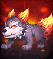 | N | ブリザード火炎犬 | 攻撃力 | 8 | 経験値 | 4 | 体力吸収 | 4 |
| 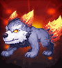 | N | 青の火炎犬 | ドロップ率 | 8 | 回避率 | 4 | ドロップ率 | 4 |
| 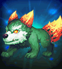 | N | 緑の火炎犬 | 火低下 | 8 | 被ダメージ反射 | 4 | 火強化 | 4 |
| 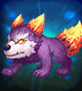 | N | 紫の火炎犬 | 火抵抗力 | 8 | 火強化 | 4 | 抵抗力低下防止 | 4 |
| 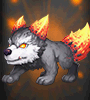 | N | 灰色の火炎犬 | 最大CP | 8 | 能力値低下防止 | 4 | 最大体力 | 4 |
| 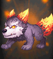 | N | 赤の火炎犬 | 攻撃力 | 8 | 攻撃力 | 4 | 動物型ダメージ | 4 |
| 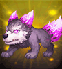 | N | 紫の閃光犬 | クリティカル確率 | 8 | クリティカルダメージ | 4 | スキル | 4 |
| 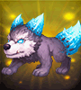 | N | 水色の閃光犬 | 最大体力 | 8 | 防御力 | 4 | 体力吸収 | 4 |
 | N | 赤の閃光犬 | 火強化 | 8 | 神獣型ダメージ | 4 | 火低下 | 4 |
| 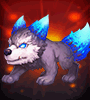 | N | 青の閃光犬 | 大地抵抗力 | 8 | クリティカルダメージ減少 | 4 | 火抵抗力 | 4 |
| 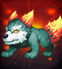 | N | 変異火炎犬 | ペット&召喚獣強化 | 8 | ペット&召喚獣体力 | 4 | ペット&召喚獣全てのステータス | 4 |
 | N | 乙女ミニゴースト | 状態異常抵抗力 | 8 | ドロップ率 | 4 | 最大CP | 4 |
| N | 海ミニゴースト | 闇低下 | 8 | 全ての属性抵抗 | 4 | 闇強化 | 4 |
| N | 森ミニゴースト | 闇抵抗力 | 8 | 闇強化 | 4 | 闇低下 | 4 |
| N | 崖ミニゴースト | 攻撃力 | 8 | 被魔法ダメージ吸収 | 4 | 命中率 | 4 |
| N | 岩ミニゴースト | スキル | 8 | スキル | 4 | 最大CP | 4 |
| N | 砂漠ミニゴースト | 回避率 | 8 | 火抵抗力 | 4 | 移動速度 | 4 |
| N | 滝ミニゴースト | 闇強化 | 8 | 攻撃速度 | 4 | 闇低下 | 4 |
| N | 平原ミニゴースト | 最大体力 | 8 | クリティカルダメージ減少 | 4 | 悪魔型ダメージ | 4 |
| N | 紳士ミニゴースト | 移動速度 | 8 | 被魔法ダメージ吸収 | 4 | 攻撃力 | 4 |
| N | 墓地ミニゴースト | クリティカル確率 | 8 | 水抵抗力 | 4 | クリティカルダメージ | 4 |
| N | 地下ミニゴースト | 防御力 | 8 | 闇抵抗力 | 4 | 被ダメージ反射 | 4 |
| N | 強欲のゴーレム | 光抵抗力 | 8 | クリティカル確率 | 4 | 光低下 | 4 |
| N | 忘却のゴーレム | 光強化 | 8 | 光強化 | 4 | 動物型ダメージ | 4 |
| N | 貪欲のゴーレム | 回避率 | 8 | 能力値低下防止 | 4 | 光抵抗力 | 4 |
| N | 祝福のゴーレム | 攻撃速度 | 8 | クリティカルダメージ | 4 | 防御力 | 4 |
| N | 勇気のゴーレム | 最大体力 | 8 | 最大体力 | 4 | ドロップ率 | 4 |
 | N | 正義のゴーレム | 経験値 | 8 | 大地抵抗力 | 4 | 被ダメージ反射 | 4 |
| N | 不屈のゴーレム | 大地抵抗力 | 8 | 攻撃力 | 4 | 経験値 | 4 |
| N | 幸福のゴーレム | ペット&召喚獣強化 | 8 | ペット&召喚獣全てのステータス | 4 | ペット&召喚獣攻撃力 | 4 |
| N | 希望のゴーレム | 移動速度 | 8 | アンデッド型ダメージ | 4 | 体力吸収 | 4 |
| N | 憤怒のゴーレム | 光低下 | 8 | 移動速度 | 4 | 光強化 | 4 |
| N | 復讐のゴーレム | ドロップ率 | 8 | 光抵抗力 | 4 | 状態異常抵抗力 | 4 |
| N | レビット | 水強化 | 8 | 水低下 | 4 | アンデッド型ダメージ | 4 |
| N | リビット | 水低下 | 8 | 抵抗力低下防止 | 4 | 水強化 | 4 |
| N | ルビット | 水抵抗力 | 8 | 回避率 | 4 | 被魔法ダメージ吸収 | 4 |
 | N | ロビット | 最大体力 | 8 | 防御力 | 4 | 状態異常抵抗力 | 4 |
| N | ブビット | 最大CP | 8 | ペット&召喚獣強化 | 4 | 水抵抗力 | 4 |
| N | レイット | 水強化 | 8 | 水低下 | 4 | スキルクールタイム減少 | 4 |
| N | ルイット | ペット&召喚獣全てのステータス | 8 | ペット&召喚獣体力 | 4 | 風抵抗力 | 4 |
| N | ロイット | 防御力 | 8 | 攻撃速度 | 4 | 神獣型ダメージ | 4 |
| N | ライット | スキル | 8 | 攻撃力 | 4 | 防御力 | 4 |
| N | レビント | 水低下 | 8 | 水強化 | 4 | 被ダメージCPに変換 | 4 |
| N | ルビント | 命中率 | 8 | クリティカル確率 | 4 | 闇抵抗力 | 4 |
| N | 花霊アサガオ | 大地強化 | 8 | 被ダメージCPに変換 | 4 | 最大CP | 4 |
| N | 花霊ローズ | 攻撃力 | 8 | 状態異常抵抗力 | 4 | クリティカルダメージ | 4 |
 | N | 花霊スミレ | 状態異常抵抗力 | 8 | 最大体力 | 4 | 悪魔型ダメージ | 4 |
| N | 花霊ベル | 大地低下 | 8 | 大地強化 | 4 | 大地抵抗力 | 4 |
| N | 花霊ナノハ | 風抵抗力 | 8 | 命中率 | 4 | 全ての属性抵抗 | 4 |
| N | 花霊カスミ | 被ダメージ反射 | 8 | ペット&召喚獣全てのステータス | 4 | ペット&召喚獣状態異常抵抗 | 4 |
| N | 花霊ノウゼン | 風強化 | 8 | 最大CP | 4 | 風低下 | 4 |
| N | 花霊ワスレナ | 攻撃速度 | 8 | 最大体力 | 4 | 大地低下 | 4 |
| N | 花霊アマドコロ | 風低下 | 8 | 風抵抗力 | 4 | 風強化 | 4 |
| N | 花霊ウィロウ | 経験値 | 8 | 攻撃力 | 4 | 火抵抗力 | 4 |
| N | 花霊アイリス | 被魔法ダメージ吸収 | 8 | 風強化 | 4 | 移動速度 | 4 |
| R | 黄昏のフレア | 火低下 | 16 | 回避率 | 8 | 火強化 | 8 |
| R | 堕落のフレア | 水低下 | 16 | 水強化 | 8 | 最大CP | 8 |
| R | 呪いのフレア | 風低下 | 16 | 全ての属性抵抗 | 8 | 風強化 | 8 |
| R | 暗闇のフレア | 水強化 | 16 | 水抵抗力 | 8 | 水低下 | 8 |
| R | 地獄のフレア | 状態異常抵抗力 | 16 | 攻撃速度 | 8 | 悪魔型ダメージ | 8 |
| R | ボーンナイト | 闇抵抗力 | 16 | 最大体力 | 8 | 防御力 | 8 |
| R | ボーンウォリアー | 大地強化 | 16 | 防御力 | 8 | 大地強化 | 8 |
| R | ボーンヒーロー | 闇低下 | 16 | 闇強化 | 8 | 経験値 | 8 |
| R | ボーンソルジャー | 防御力 | 16 | 攻撃力 | 8 | 被ダメージ反射 | 8 |
| R | ボーンシーフ | 闇強化 | 16 | スキルクールタイム減少 | 8 | 闇低下 | 8 |
| 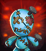 | R | 空色のルジュエ | 被ダメージ反射 | 16 | 最大体力 | 8 | ドロップ率 | 8 |
| 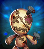 | R | 血色のルジュエ | 火強化 | 16 | 火低下 | 8 | スキル | 8 |
| 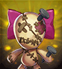 | R | リボンのルジュエ | 移動速度 | 16 | クリティカルダメージ | 8 | 命中率 | 8 |
 | R | 太糸のルジュエ | 回避率 | 16 | 移動速度 | 8 | 神獣型ダメージ | 8 |
| 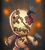 | R | ルジュエ | 最大CP | 16 | ドロップ率 | 8 | 攻撃速度 | 8 |
| R | ヴィド | 大地抵抗力 | 16 | 被ダメージCPに変換 | 8 | 攻撃力 | 8 |
| 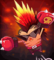 | R | モヒカンキャロ | ドロップ率 | 16 | 経験値 | 8 | クリティカルダメージ減少 | 8 |
| 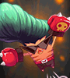 | R | リーゼントキャロ | クリティカルダメージ | 16 | クリティカル確率 | 8 | 動物型ダメージ | 8 |
| 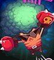 | R | アフロキャロ | 風強化 | 16 | 風低下 | 8 | 状態異常抵抗力 | 8 |
| 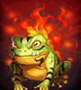 | R | ファフ | 全ての属性抵抗 | 16 | 光強化 | 8 | 能力値低下防止 | 8 |
| 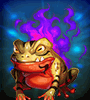 | R | ポフ | 光低下 | 16 | アンデッド型ダメージ | 8 | 光強化 | 8 |
| 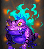 | R | パフ | 火強化 | 16 | 火低下 | 8 | 火抵抗力 | 8 |
| 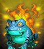 | R | プフ | 大地低下 | 16 | 大地抵抗力 | 8 | 大地強化 | 8 |
| 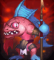 | R | レッドアブソル | クリティカル確率 | 16 | クリティカルダメージ | 8 | 全ての属性抵抗 | 8 |
| 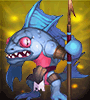 | R | ブルーアブソル | 攻撃力 | 16 | 体力吸収 | 8 | 水抵抗力 | 8 |
| 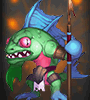 | R | グリーンアブソル | 大地強化 | 16 | 大地抵抗力 | 8 | 大地低下 | 8 |
 | R | パープルアブソル | 防御力 | 16 | 被魔法ダメージ吸収 | 8 | 被ダメージ反射 | 8 |
| 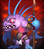 | R | ロードアブソル | クリティカル確率 | 16 | スキル | 8 | 火抵抗力 | 8 |
| 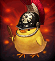 | R | 強靭なヒヨコ戦士 | 攻撃速度 | 16 | 体力吸収 | 8 | 風抵抗力 | 8 |
| 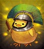 | R | 強運のヒヨコ戦士 | クリティカル確率 | 16 | 最大CP | 8 | 攻撃速度 | 8 |
| 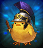 | R | 賢明なヒヨコ戦士 | 光強化 | 16 | 光低下 | 8 | アンデッド型ダメージ | 8 |
| 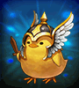 | R | 疾風のヒヨコ戦士 | 大地強化 | 16 | 最大体力 | 8 | 大地低下 | 8 |
| 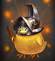 | R | 壮健なヒヨコ戦士 | クリティカルダメージ減少 | 16 | クリティカル確率 | 8 | 光抵抗力 | 8 |
| R | ワイアットピグ | 最大体力 | 16 | 風抵抗力 | 8 | 全ての属性抵抗 | 8 |
| R | コリントピグ | 火強化 | 16 | 火低下 | 8 | スキル | 8 |
| R | フィルバートピグ | 風強化 | 16 | 風低下 | 8 | クリティカルダメージ減少 | 8 |
| R | メイソンピグ | ペット&召喚獣体力 | 16 | ペット&召喚獣状態異常抵抗 | 8 | ペット&召喚獣強化 | 8 |
| R | 骸骨仮面バット | 被ダメージCPに変換 | 16 | 防御力 | 8 | 抵抗力低下防止 | 8 |
| 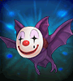 | R | ピエロ仮面バット | 命中率 | 16 | 闇強化 | 8 | 闇低下 | 8 |
| 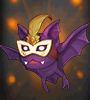 | R | 舞台仮面バット | 状態異常抵抗力 | 16 | 攻撃力 | 8 | クリティカルダメージ | 8 |
| 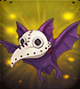 | R | トガリ仮面バット | ペット&召喚獣攻撃力 | 16 | ペット&召喚獣攻撃力 | 8 | ペット&召喚獣全てのステータス | 8 |
| R | ピンクチビット | スキル | 16 | 火強化 | 8 | クリティカル確率 | 8 |
| R | ブルーチビット | 最大体力 | 16 | 状態異常抵抗力 | 8 | 経験値 | 8 |
| R | グリーンチビット | ペット&召喚獣状態異常抵抗 | 16 | ペット&召喚獣強化 | 8 | ペット&召喚獣体力 | 8 |
| R | オレンジチビット | クリティカルダメージ | 16 | 防御力 | 8 | 命中率 | 8 |
| R | 花精マリアカラス | 攻撃力 | 16 | 体力吸収 | 8 | 状態異常抵抗力 | 8 |
| R | 花精シャルル | ペット&召喚獣強化 | 16 | ペット&召喚獣全てのステータス | 8 | 攻撃速度 | 8 |
| R | 花精サンブライト | 経験値 | 16 | 移動速度 | 8 | 水低下 | 8 |
| R | 花精ブルームーン | スキル | 16 | 神獣型ダメージ | 8 | 体力吸収 | 8 |
| R | ブラウンモス | 火抵抗力 | 16 | 攻撃力 | 8 | 被魔法ダメージ吸収 | 8 |
| R | バイオレットモス | 水抵抗力 | 16 | 水強化 | 8 | 能力値低下防止 | 8 |
| R | オリーブモス | 風抵抗力 | 16 | 最大体力 | 8 | 抵抗力低下防止 | 8 |
| R | ミュータントモス | 大地抵抗力 | 16 | 悪魔型ダメージ | 8 | 闇抵抗力 | 8 |
| 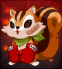 | R | パープルエリーズ | クリティカル確率 | 16 | 経験値 | 8 | 水抵抗力 | 8 |
| 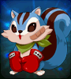 | R | ブルーエリーズ | 光抵抗力 | 16 | 攻撃力 | 8 | 神獣型ダメージ | 8 |
| 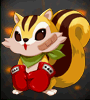 | R | レッドエリーズ | ペット&召喚獣攻撃力 | 16 | ペット&召喚獣状態異常抵抗 | 8 | ペット&召喚獣体力 | 8 |
| 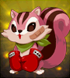 | R | グリーンエリーズ | 移動速度 | 16 | 被ダメージ反射 | 8 | 火抵抗力 | 8 |
| R | チャンピオンマモ | 攻撃力 | 16 | アンデッド型ダメージ | 8 | 光強化 | 8 |
| R | チャンピオンシマ | ペット&召喚獣全てのステータス | 16 | ペット&召喚獣攻撃力 | 8 | ペット&召喚獣体力 | 8 |
| R | チャンピオンモモ | 最大体力 | 16 | 闇抵抗力 | 8 | 体力吸収 | 8 |
| R | チャンピオンジリ | 最大CP | 16 | クリティカル確率 | 8 | ドロップ率 | 8 |
| 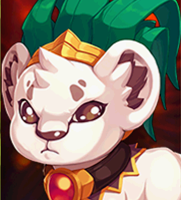 | R | プリンスリオン | スキル | 16 | ドロップ率 | 8 | 回避率 | 8 |
| 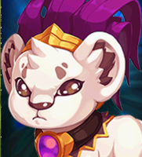 | R | プリンスラオン | ？ | 16 | ？ | 8 | ？ | 8 |
| 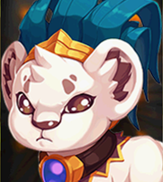 | R | プリンスロウン | ？ | 16 | ？ | 8 | ？ | 8 |
| 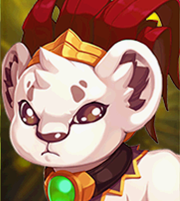 | R | プリンスルウン | ？ | 16 | ？ | 8 | ？ | 8 |
| 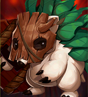 | R | アスター | 被魔法ダメージ吸収 | 16 | 大地低下 | 8 | 攻撃力 | 8 |
| 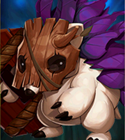 | R | エスター | 防御力 | 16 | 風強化 | 8 | 被ダメージCPに変換 | 8 |
| 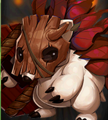 | R | ウスター | 光強化 | 16 | 動物型ダメージ | 8 | 移動速度 | 8 |
| 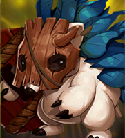 | R | イスター | ペット&召喚獣の全てのステータス | 16 | 回避率 | 8 | クリティカルダメージ減少 | 8 |
| R | オローニ | 火抵抗力 | 16 | 火低下 | 8 | ペット&召喚獣の攻撃力 | 8 |
| R | オローナ | 水抵抗力 | 16 | 水低下 | 8 | ペット&召喚獣強化 | 8 |
| 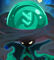 | R | オローネ | 風抵抗力 | 16 | 風低下 | 8 | ペット&召喚獣の状態異常抵抗 | 8 |
| R | オローヌ | 大地抵抗力 | 16 | 大地低下 | 8 | ペット&召喚獣体力 | 8 |
| R | ソードガーディアン | 防御力 | 16 | 神獣型ダメージ | 8 | 被ダメージ反射 | 8 |
| R | アックスガーディアン | 最大体力 | 16 | 動物型ダメージ | 8 | 最大CP | 8 |
| R | ハンマーガーディアン | クリティカルダメージ減少 | 16 | アンデット型ダメージ | 8 | 獲得CP増加 | 8 |
| R | スピアガーディアン | 状態異常抵抗力 | 16 | 悪魔型ダメージ | 8 | 被ダメージCPに変換 | 8 |
| R | アウルナイト | 被ダメージ反射 | 16 | 最大体力 | 8 | 命中率 | 8 |
| R | アウルスカウト | クリティカル確率 | 16 | 回避率 | 8 | 攻撃速度 | 8 |
| R | アウルスコラ | 経験値 | 16 | スキル | 8 | 回避率 | 8 |
| R | アウルバンディット | ドロップ率 | 16 | 移動速度 | 8 | 体力吸収 | 8 |
| HR | コボルト大魔導師 | 火低下 | 24 | 火強化 | 12 | 魔法攻撃力強化 | 3 |
| HR | ウィッチマゴ | 光低下 | 24 | 光強化 | 12 | 魔法強打 | 3 |
| HR | ドレアス | 水低下 | 24 | 水強化 | 12 | 水抵抗力 | 12 |
| 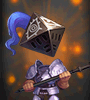 | HR | ナイトスピア | アンデッド型ダメージ | 24 | 上級状態異常抵抗力 | 3 | 闇抵抗力 | 12 |
| 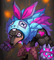 | HR | ドベルト | 動物型ダメージ | 24 | クリティカル確率 | 12 | PVP防御力 | 3 |
| HR | タイムシュラット | スキルクールタイム減少 | 24 | 被ダメージ反射 | 12 | 風抵抗力 | 12 |
| 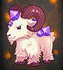 | HR | エマティース | 大地低下 | 24 | 大地強化 | 12 | 最大CP | 12 |
| 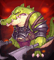 | HR | トゥルイク | 悪魔型ダメージ | 24 | PVP防御力 | 3 | 上級攻撃力 | 3 |
| HR | グリフォン | 風低下 | 24 | 風強化 | 12 | 上級最大CP | 3 |
| HR | マスクグール | 闇低下 | 24 | 闇強化 | 12 | 与魔法ダメージ吸収 | 3 |
| HR | 泣き虫ルドルフ | ドロップ率 | 24 | PVP攻撃力 | 3 | 命中率 | 12 |
| HR | クリスマスフェアリー | ペット&召喚獣体力 | 24 | 経験値 | 12 | ペット&召喚獣強化 | 12 |
| HR | フォクシーテール | 経験値 | 24 | 人間型魔法ダメージ | 3 | 魔法攻撃力強化 | 3 |
| HR | ハウンデブル | 被ダメージ反射 | 24 | 被ダメージCPに変換 | 12 | 火抵抗力 | 12 |
 | HR | ペンギン大佐 | 回避率 | 24 | 上級防御力 | 3 | 風抵抗力 | 12 |
| HR | プリンセスルーナ | 被魔法ダメージ吸収 | 24 | 人間型ダメージ | 3 | 抵抗力低下防止 | 12 |
| HR | クマーン | 防御力 | 24 | 強打 | 3 | 全ての属性抵抗 | 12 |
| HR | 見習い魔女リトル | クリティカルダメージ減少 | 24 | 上級体力 | 3 | 能力値低下防止 | 12 |
| HR | ライカンスロープ | 神獣型ダメージ | 24 | 敵致命打減少 | 3 | 被ダメージ反射 | 12 |
| HR | キングクレバネット | 経験値 | 24 | 体力吸収 | 12 | 上級攻撃速度 | 3 |
| HR | ガイア | 闇低下 | 24 | 魔法強打 | 3 | 光抵抗力 | 12 |
 | HR | トリックスター | 状態異常抵抗力 | 24 | 防御力 | 12 | 人間型ダメージ抵抗 | 3 |
| HR | ドリーマー | 命中率 | 24 | 上級攻撃力 | 3 | 攻撃速度 | 12 |
| HR | ノーマド | 回避率 | 24 | 大地抵抗力 | 12 | 魔法抵抗力低下 | 3 |
 | HR | シッティングダイル | 攻撃速度 | 24 | クリティカルダメージ | 12 | 回避率 | 12 |
| HR | メラニー | ペット&召喚獣強化 | 24 | ペット&召喚獣全てのステータス | 12 | 最大CP | 12 |
| HR | シーウォーカー | 最大体力 | 24 | ダブルクリティカルダメージ | 3 | 最大体力 | 12 |
 | HR | カイザー | スキル | 24 | 上級状態異常抵抗力 | 3 | 魔法致命打 | 3 |
 | HR | クレア | 攻撃力 | 24 | クリティカルダメージ減少 | 12 | ドロップ率 | 12 |
| HR | サキュバスヴェラ | スキル | 24 | 経験値 | 12 | 上級スキル | 3 |
| HR | ヴィーナス | ペット&召喚獣攻撃力 | 24 | 最大体力 | 12 | 人間型ダメージ | 3 |
 | HR | イフリート | 火強化 | 24 | 火抵抗力 | 12 | 被ダメージCPに変換 | 12 |
| HR | かんがえるさかな | 経験値 | 24 | 水抵抗力 | 12 | 体力吸収 | 12 |
 | HR | ブラックウィドー | 能力値低下防止 | 24 | 魔法攻撃力強化 | 3 | ペット&召喚獣の魔法致命打確率 | 12 |
| HR | ホワイトレディー | 抵抗力低下防止 | 24 | 上級攻撃力 | 3 | ペット&召喚獣の強打確率 | 12 |
| HR | プチデリン | 攻撃力 | 24 | 火抵抗力 | 12 | 命中率 | 12 |
| HR | プチダリン | ドロップ率 | 24 | 魔法攻撃力強化 | 3 | ペット&召喚獣全てのステータス | 12 |
| HR | エルダーハーミット | 全ての属性抵抗 | 24 | 動物型ダメージ | 12 | ペット&召喚獣体力 | 12 |
| HR | タイニーフォックス | クリティカル確率 | 24 | 攻撃力 | 12 | 悪魔型ダメージ | 12 |
| HR | リトルロトル | 水強化 | 24 | 水低下 | 12 | 状態異常抵抗力 | 12 |
| HR | ホエーリ | 抵抗力低下防止 | 24 | 移動速度 | 12 | 上級最大CP | 3 |
| SR | インキュバス | 上級スキル | 10 | 魔法抵抗力低下 | 5 | 闇強化 | 16 |
| SR | 吸血姫 | 体力吸収 | 32 | スキル | 16 | 上級攻撃力 | 5 |
| SR | アイスクイーン | ペット&召喚獣強化 | 32 | PVP防御力 | 5 | 人間型魔法ダメージ | 5 |
| SR | ラストウィッチ | 魔法致命打 | 10 | 与魔法ダメージ吸収 | 5 | 火強化 | 16 |
| SR | ラミア | クリティカルダメージ | 32 | PVP攻撃力 | 5 | 回避率 | 16 |
| SR | サンタレビット | ドロップ率 | 32 | 強打 | 5 | 最大体力 | 16 |
| SR | レオフォールド | ペット&召喚獣全てのステータス | 32 | PVP防御力 | 5 | ペット&召喚獣状態異常抵抗 | 16 |
| SR | メリアス | 強打 | 10 | 上級体力 | 5 | 大地強化 | 16 |
| SR | コモルコクーン | 能力値低下防止 | 32 | 人間型ダメージ抵抗 | 5 | 移動速度 | 16 |
| SR | マートン所長 | クリティカル確率 | 32 | 敵致命打減少 | 5 | 上級攻撃速度 | 5 |
| SR | スペクター | 能力値低下防止 | 32 | 上級防御力 | 5 | 命中率 | 16 |
| SR | パンプキンナイト | 上級攻撃速度 | 10 | 上級最大CP | 5 | 被ダメージ反射 | 16 |
| SR | アサシン | 攻撃速度 | 16 | 強打 | 5 | PVP防御 | 10 |
| SR | アーチャー | 上級最大CP | 10 | 全ての属性抵抗 | 16 | 経験値 | 16 |
| SR | バーサーカー | 被ダメージCPに変換 | 32 | 上級体力 | 5 | クリティカルダメージ減少 | 16 |
| SR | ランサー | 全属性抵抗 | 32 | ドロップ率 | 16 | スキル | 16 |
| SR | ケンタウロスナイト | 上級状態異常抵抗力 | 10 | 上級攻撃力 | 5 | 上級状態異常抵抗力 | 5 |
| SR | クレセンティ | 光低下 | 32 | 上級スキル | 5 | 上級最大CP | 5 |
| SR | オーロラ | 闇低下 | 32 | 魔法攻撃力強化 | 5 | 人間型魔法ダメージ | 5 |
| SR | アレクサンダ | 敵致命打減少 | 10 | 攻撃力 | 16 | クリティカルダメージ | 16 |
| SR | マキュリア | 水低下 | 32 | 魔法致命打 | 5 | 水強化 | 16 |
| SR | トワイライト | 魔法強打 | 10 | PVP防御力 | 5 | 上級最大CP | 5 |
| SR | ラクネーラ | 人間型魔法ダメージ | 10 | 魔法致命打 | 5 | 水強化 | 16 |
| SR | 橘 清音 | クリティカル確率 | 32 | 上級攻撃速度 | 5 | 命中率 | 16 |
 | SR | 枇々木 丈 | クリティカルダメージ | 32 | 上級攻撃力 | 5 | 最大体力 | 16 |
| SR | 宮 うつつ | 上級最大CP | 10 | 状態異常抵抗力 | 16 | 経験値 | 16 |
| SR | 爾乃美家 累 | 人間型魔法ダメージ | 5 | スキル | 16 | 被ダメージをCPに変換 | 16 |
| SR | シーカー | PVP防御力 | 10 | 人間型ダメージ抵抗 | 5 | 被魔法ダメージ吸収 | 16 |
| SR | アマニタマジシャン | ペット&召喚獣魔法致命打確率 | 32 | 状態異常抵抗力 | 16 | 被ダメージをCPに変換 | 16 |
| SR | セイクリッドフォックス | 魔法攻撃力強化 | 10 | 闇低下 | 16 | 魔法強打 | 5 |
| SR | ドレカニア | クリティカルダメージ | 32 | 上級攻撃力 | 5 | 敵致命打減少 | 5 |
| SR | ホエーザランド | ペット&召喚獣敵致命打減少 | 10 | ペット&召喚獣攻撃力 | 16 | ペット&召喚獣体力 | 16 |
| SR | アルティナ・オライオン | ペット&召喚獣全てのステータス | 32 | ペット&召喚獣体力 | 16 | 防御力 | 16 |
 | SR | アリサ・ラインフォルト | 魔法攻撃力強化 | 10 | 状態異常抵抗力 | 16 | 最大CP | 16 |
 | SR | ラウラ・S・アルゼイド | ダブルクリティカルダメージ | 10 | 上級攻撃速度 | 5 | 命中率 | 16 |
| LR | ヴァルキリー | 上級攻撃力 | 20 | 敵致命打減少 | 10 | 上級攻撃速度 | 10 |
| LR | アグレアス | 人間型ダメージ | 20 | 上級体力 | 10 | 上級防御力 | 10 |
| LR | アビス | 人間型ダメージ抵抗 | 20 | 上級状態異常抵抗力 | 10 | 魔法強打 | 10 |
| LR | セイバー | 強打 | 20 | 上級最大CP | 10 | 上級攻撃力 | 10 |
| LR | ライダー | 魔法強打 | 20 | 与魔法ダメージ吸収 | 10 | 上級スキル | 10 |
| LR | グラビティアナ | PVP攻撃力 | 20 | 強打 | 10 | ダブルクリティカルダメージ | 10 |
| LR | タナトス | 魔法攻撃力強化 | 20 | 魔法致命打 | 10 | 魔法抵抗力低下 | 10 |
| LR | ハーモニー | 与魔法ダメージ吸収 | 20 | 魔法抵抗力低下 | 10 | 上級スキル | 10 |
| LR | 一ノ瀬はじめ | 上級防御力 | 20 | 強打 | 10 | 魔法強打 | 10 |
| LR | ゴールド・エンペラー | 最終ダメージ | 20 | 強打 | 10 | 上級状態異常抵抗力 | 10 |
 | LR | ダークネスネビュラ | 人間型魔法ダメージ | 20 | 上級スキル | 10 | 上級状態異常抵抗力 | 10 |
| LR | ワンインオール | 魔法致命打 | 20 | 魔法強打 | 10 | 与魔法ダメージ吸収 | 10 |
| LR | プチランサー | ダブルクリティカルダメージ | 20 | 人間型ダメージ | 10 | 上級攻撃速度 | 10 |
| LR | プチウィザード | 魔法抵抗力低下 | 20 | 人間型魔法ダメージ | 10 | 魔法致命打 | 10 |
| LR | リィン・シュバルツァー | ダブルクリティカルダメージ | 20 | 上級攻撃力 | 10 | 上級防御力 | 10 |
| LR | クロウ・アームブラスト | 魔法攻撃力強化 | 20 | 魔法抵抗力低下 | 10 | 魔法強打 | 10 |